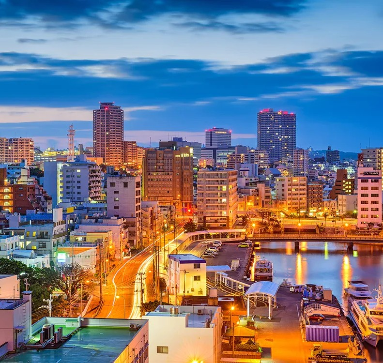
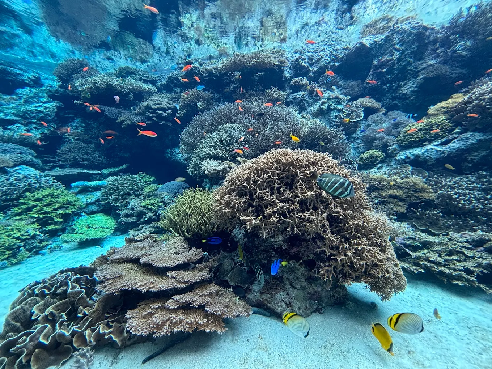
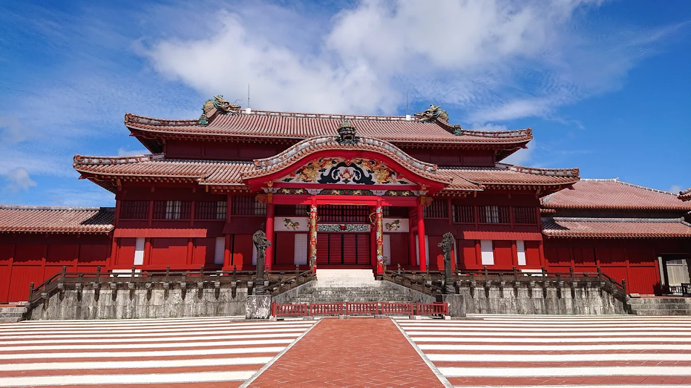
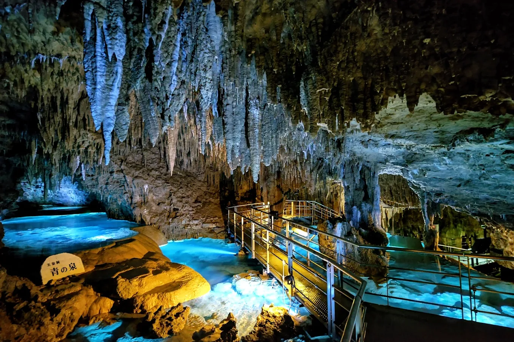
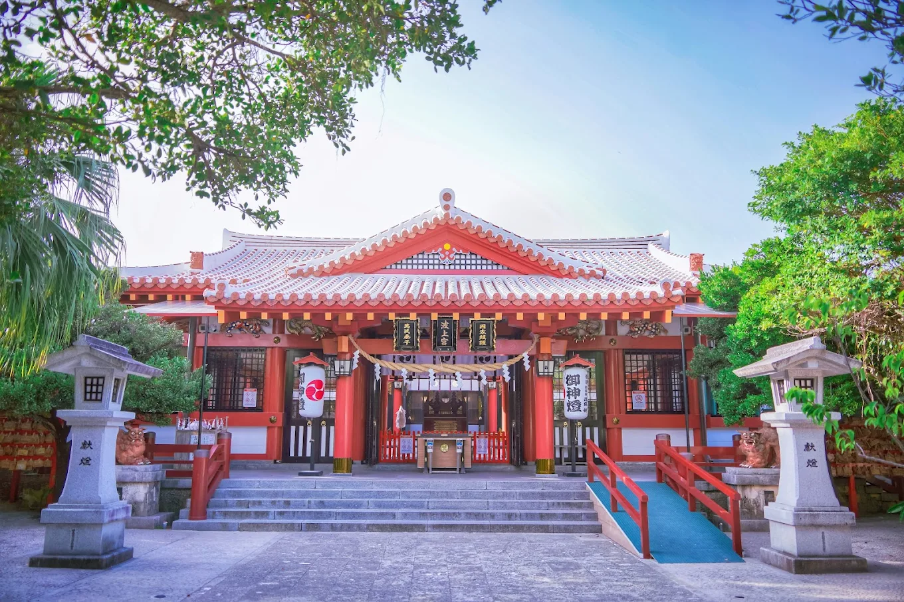
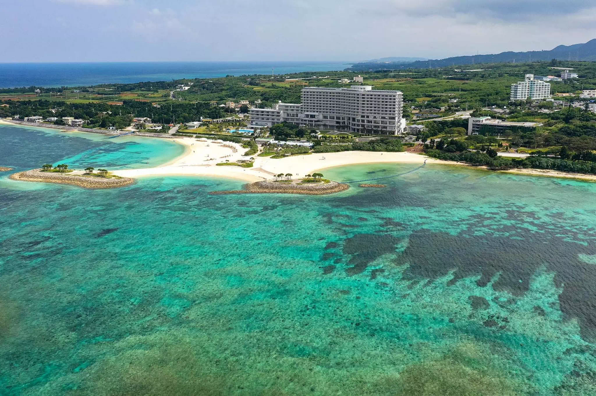
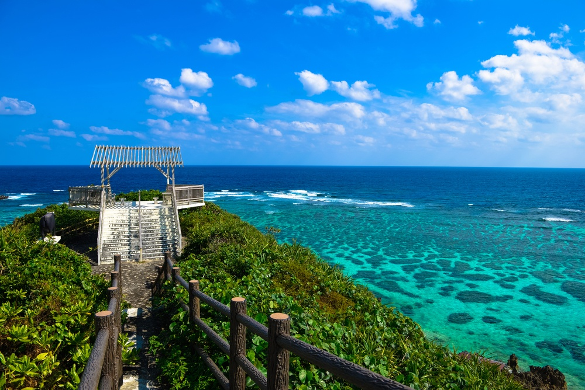
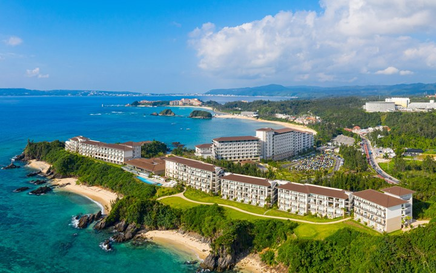
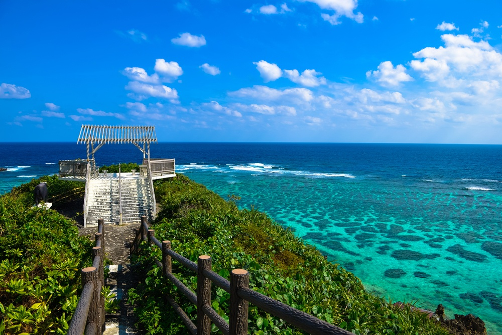
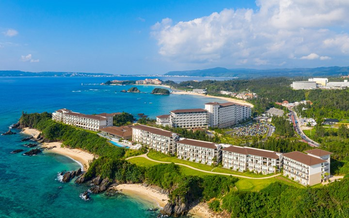

Okinawa: Japan's Tropical Paradise

Okinawa, Japan’s southernmost prefecture, is a vibrant chain of over 160 islands, with Naha as its capital. It’s known for its subtropical climate, stunning beaches, and rich Ryukyu Kingdom history, seen in sites like Shuri Castle.
What’s great about Okinawa is its unique culture, blending Japanese, Chinese, and American influences, with distinct foods like Okinawa soba and karate’s birthplace. The islands offer world-class diving, lush landscapes, and a relaxed lifestyle, making it Japan’s “Hawaii.” Its warm weather, long life expectancy, and mix of tradition and modernity create an inviting, unforgettable destination.
History: Ryukyu Period to Modern Era
Okinawa’s history is a captivating tale of independence and influence. Once the Ryukyu Kingdom, it thrived from the 15th to 19th centuries, trading with China, Japan, and Southeast Asia, creating a unique culture of music, dance, and crafts. Conquered by Japan in the 19th century, it faced devastation during World War II, especially the Battle of Okinawa.
After 1945, U.S. occupation shaped its modern identity until returning to Japan in 1972. Today, it blends ancient traditions with a tropical vibe, making it a fascinating blend of resilience, cultural richness, and natural beauty that draws visitors worldwide.
Culture: Language, Music, Dance!
Okinawa’s culture is a vibrant tapestry, distinct from mainland Japan. Its language, Okinawan or Uchinaaguchi, blends Japanese and Ryukyu influences, preserving unique expressions and stories. Music features the sanshin, a banjo-like instrument, and traditional songs like folk ballads, often accompanied by lively eisa dances with drums and colorful costumes during festivals.
Dance reflects Ryukyu heritage, with graceful movements and group performances celebrating community and history. Cuisine, like goya champuru and awamori liquor, adds flavor to this cultural mix. This blend of language, music, and dance creates an inviting, rhythmic identity that showcases Okinawa’s tropical charm and resilience.
Here are some different types of Dances
in the Okinawan Culture:
- Traditional court dances (Koten Buyo)
- Folk dances (Zo-dui)
- Modern creative dances (Sousaku Buyo)
Top 4 Attractions to Visit




Why Should YOU Visit Okinawa?

 



Okinawa is like Japan’s tropical playground—where stunning beaches meet rich history and unique culture. Imagine snorkeling in crystal-clear waters, diving among vibrant coral reefs, or chilling on sandy shores with barely a soul in sight.
The island’s laid-back vibe is contagious, and the food? Absolutely unforgettable—think Okinawa soba, fresh seafood, and sweet treats like sata andagi. You can wander through ancient castles, visit hidden caves, or explore the beautiful islands nearby. Plus, the locals are some of the friendliest you’ll meet. Whether you're chasing adventure or just craving a peaceful escape, Okinawa will steal your heart.